This package allows to describe the flow of active power between a synchronous generator and a grid, through simplified power transmission line models, assuming ideal voltage control.
These models are meant to be used as simplified boundary conditions for a thermal power plant model, rather than for fully modular description of three-phase networks. Specialized libraries should be used for this purpose; bear in mind, however, that full three-phase models of electrical machinery and power lines could make the power plant simulation substantially heavier, if special numeric integration strategies are not adopted.
| Name | Description |
|---|---|
| PowerConnection | Electrical power connector |
| 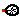 Grid | Ideal grid with finite droop |
| 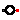 Generator | Active power generator |
| 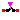 Breaker | Circuit breaker |
| 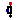 Load | Electrical load |
| Measures power flow through the component | |
| 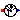 FrequencySensor | Measures the frequency at the connector |
| 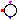 Network1portBase | Base class for one-port network |
| NetworkGrid_eX | |
| 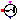 NetworkGrid_Pmax | |
| Base class for network with two port | |
| 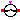 NetworkTwoGenerators_eX | Connection: generator(a) - generator(b); Parameters: voltages and reactances |
| NetworkTwoGenerators_Pmax | Connection: generator(a) - generator(b); Parameters: maximum power |
| 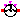 NetworkGridTwoGenerators | Base class for network with two port |
 ThermoPower.Electrical.PowerConnection
ThermoPower.Electrical.PowerConnection
| Type | Name | Description |
|---|---|---|
| flow Power | W | Active power [W] |
| Frequency | f | Frequency [Hz] |
connector PowerConnection "Electrical power connector" flow Power W "Active power"; Frequency f "Frequency"; end PowerConnection;
| Type | Name | Default | Description |
|---|---|---|---|
| Frequency | fn | 50 | Nominal frequency [Hz] |
| Power | Pn | Nominal power installed on the network [W] | |
| Real | droop | 0.05 | Network droop [pu] |
| Type | Name | Description |
|---|---|---|
| PowerConnection | connection |
model Grid "Ideal grid with finite droop" parameter Frequency fn=50 "Nominal frequency"; parameter Power Pn "Nominal power installed on the network"; parameter Real droop(unit="pu")=0.05 "Network droop"; PowerConnection connection; equation connection.f = fn + droop*fn*connection.W/Pn; end Grid;
This model describes the conversion between mechanical power and electrical power in an ideal synchronous generator. The frequency in the electrical connector is the e.m.f. of generator.
It is possible to consider the generator inertia in the model, by setting the parameter J > 0.
| Type | Name | Default | Description |
|---|---|---|---|
| Real | eta | 1 | Conversion efficiency |
| MomentOfInertia | J | 0 | Moment of inertia [kg.m2] |
| Integer | Np | 2 | Number of electrical poles |
| Initialization | |||
| Frequency | fstart | 50 | Start value of the electrical frequency [Hz] |
| Temp | initOpt | ThermoPower.Choices.Init.Opt... | Initialization option |
| Type | Name | Description |
|---|---|---|
| PowerConnection | powerConnection | |
| Flange_a | shaft |
model Generator "Active power generator"
import Modelica.SIunits.Conversions.NonSIunits.*;
parameter Real eta=1 "Conversion efficiency";
parameter Modelica.SIunits.MomentOfInertia J=0 "Moment of inertia";
parameter Integer Np=2 "Number of electrical poles";
parameter Modelica.SIunits.Frequency fstart=50
"Start value of the electrical frequency";
parameter ThermoPower.Choices.Init.Options.Temp initOpt=ThermoPower.Choices.Init.Options.noInit
"Initialization option";
Modelica.SIunits.Power Pm "Mechanical power";
Modelica.SIunits.Power Pe "Electrical Power";
Modelica.SIunits.Power Ploss "Inertial power Loss";
Modelica.SIunits.Torque tau "Torque at shaft";
Modelica.SIunits.AngularVelocity omega_m( start=2*Modelica.Constants.pi*fstart/Np)
"Angular velocity of the shaft";
Modelica.SIunits.AngularVelocity omega_e
"Angular velocity of the e.m.f. rotating frame";
AngularVelocity_rpm n "Rotational speed";
Modelica.SIunits.Frequency f "Electrical frequency";
PowerConnection powerConnection;
Modelica.Mechanics.Rotational.Interfaces.Flange_a shaft;
equation
omega_m = der(shaft.phi) "Mechanical boundary condition";
omega_e = omega_m*Np;
f = omega_e/(2*Modelica.Constants.pi) "Electrical frequency";
n = Modelica.SIunits.Conversions.to_rpm(omega_m) "Rotational speed in rpm";
Pm = omega_m*tau;
if J>0 then
Ploss = J*der(omega_m)*omega_m;
else
Ploss = 0;
end if;
Pm = Pe/eta + Ploss "Energy balance";
// Boundary conditions
f = powerConnection.f;
Pe = -powerConnection.W;
tau = shaft.tau;
initial equation
if initOpt == ThermoPower.Choices.Init.Options.noInit then
// do nothing
elseif initOpt == ThermoPower.Choices.Init.Options.steadyState then
der(omega_m) = 0;
else
assert(false, "Unsupported initialisation option");
end if;
end Generator;
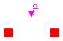
| Type | Name | Description |
|---|---|---|
| PowerConnection | connection1 | |
| PowerConnection | connection2 | |
| input BooleanInput | closed |
model Breaker "Circuit breaker"
PowerConnection connection1;
PowerConnection connection2;
Modelica.Blocks.Interfaces.BooleanInput closed;
equation
connection1.W+connection2.W=0;
if closed then
connection1.f=connection2.f;
else
connection1.W=0;
end if;
end Breaker;
| Type | Name | Default | Description |
|---|---|---|---|
| Power | Wn | Nominal active power consumption [W] | |
| Frequency | fn | 50 | Nominal frequency [Hz] |
| Type | Name | Description |
|---|---|---|
| PowerConnection | connection | |
| input RealInput | powerConsumption |
model Load "Electrical load"
parameter Power Wn "Nominal active power consumption";
parameter Frequency fn=50 "Nominal frequency";
replaceable function powerCurve = Functions.one
"Normalised power consumption vs. frequency curve";
PowerConnection connection;
Power W "Actual power consumption";
Frequency f "Frequency";
Modelica.Blocks.Interfaces.RealInput powerConsumption;
equation
if cardinality(powerConsumption)==1 then
W=powerConsumption*powerCurve((f-fn)/fn)
"Power consumption determined by connector";
else
powerConsumption=Wn "Set the connector value (not used)";
W=Wn*powerCurve((f-fn)/fn) "Power consumption determined by parameter";
end if;
connection.f=f;
connection.W=W;
end Load;

| Type | Name | Description |
|---|---|---|
| PowerConnection | port_a | |
| PowerConnection | port_b | |
| output RealOutput | W | Power flowing from port_a to port_b |
model PowerSensor "Measures power flow through the component"
PowerConnection port_a;
PowerConnection port_b;
Modelica.Blocks.Interfaces.RealOutput W(
redeclare type SignalType = Power) "Power flowing from port_a to port_b";
equation
port_a.W+port_b.W = 0;
port_a.f = port_b.f;
W = port_a.W;
end PowerSensor;
 ThermoPower.Electrical.FrequencySensor
ThermoPower.Electrical.FrequencySensor
| Type | Name | Description |
|---|---|---|
| PowerConnection | port | |
| output RealOutput | f | Frequency at the connector |
model FrequencySensor "Measures the frequency at the connector"
PowerConnection port;
Modelica.Blocks.Interfaces.RealOutput f(
redeclare type SignalType = Frequency) "Frequency at the connector";
equation
port.W = 0;
f = port.f;
end FrequencySensor;
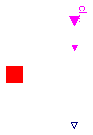
Basic interface of the Network models with one electrical port for the connection to the generator, containing the common parameters, variables and connectors.
Modelling options
The net electrical power is defined by the following relationship:
delta is the load angle, defined by the following relationship:
where omega is related to the frequency on the power connector (generator frequency), and omegaRef is the reference angular velocity of the network embedded in the model.
The electrical power losses are described by the variable Ploss.
If hasBreaker is true, the model provides a circuit breaker, controlled by the boolean input signal, to describe the connection/disconnection of the electrical port from the grid; otherwise it is assumed that the electrical port is always connected to the grid.
| Type | Name | Default | Description |
|---|---|---|---|
| Boolean | hasBreaker | false | Model includes a breaker controlled by external input |
| Power | C | Max. power transfer [W] | |
| Initialization | |||
| Angle | deltaStart | 0 | Start value of the load angle [rad] |
| Temp | initOpt | ThermoPower.Choices.Init.Opt... | Initialization option |
| Type | Name | Description |
|---|---|---|
| PowerConnection | powerConnection | |
| input BooleanInput | closed | |
| output RealOutput | delta_out |
partial model Network1portBase "Base class for one-port network"
parameter Boolean hasBreaker = false
"Model includes a breaker controlled by external input";
parameter Modelica.SIunits.Angle deltaStart=0 "Start value of the load angle";
parameter ThermoPower.Choices.Init.Options.Temp initOpt=ThermoPower.Choices.Init.Options.noInit
"Initialization option";
parameter Modelica.SIunits.Power C "Max. power transfer";
Modelica.SIunits.Power Pe "Net electrical power";
Modelica.SIunits.Power Ploss "Electrical power loss";
Modelica.SIunits.AngularVelocity omega "Angular velocity";
Modelica.SIunits.AngularVelocity omegaRef "Angular velocity reference";
Modelica.SIunits.Angle delta( stateSelect = StateSelect.prefer, start=deltaStart)
"Load angle";
PowerConnection powerConnection;
Modelica.Blocks.Interfaces.BooleanInput closed if hasBreaker;
protected
Modelica.Blocks.Interfaces.BooleanInput closedInternal;
public
Modelica.Blocks.Interfaces.RealOutput delta_out;
equation
// Load angle
der(delta) = omega - omegaRef;
// Power flow
if closedInternal then
Pe = C*Modelica.Math.sin(delta);
else
Pe = 0;
end if;
// Boundary conditions
Pe + Ploss = powerConnection.W;
omega = 2*Modelica.Constants.pi*powerConnection.f;
if not hasBreaker then
closedInternal = true;
end if;
connect(closed, closedInternal);
//Output signal
delta_out = delta;
initial equation
if initOpt == ThermoPower.Choices.Init.Options.noInit then
// do nothing
elseif initOpt == ThermoPower.Choices.Init.Options.steadyState then
der(delta) = 0;
else
assert(false, "Unsupported initialisation option");
end if;
end Network1portBase;
This model extends Network1portBase partial model, by defining the power coefficient C in terms of e, v, X, and Xline.
The power losses are represented by a linear dissipative term. It is possible to directly set the damping coefficient r of the generator/shaft system. If J is zero, zero damping is assumed by default. Note that J is only used to compute the dissipative term and should refer to the total inertia of the generator-shaft system; the network model does not add any inertial effects.
| Type | Name | Default | Description |
|---|---|---|---|
| Boolean | hasBreaker | false | Model includes a breaker controlled by external input |
| Voltage | v | Network voltage [V] | |
| Frequency | fnom | 50 | Nominal frequency of network [Hz] |
| Reactance | Xline | Line reactance [Ohm] | |
| Generator | |||
| Voltage | e | e.m.f voltage [V] | |
| Reactance | X | Internal reactance [Ohm] | |
| MomentOfInertia | J | 0 | Moment of inertia of the generator/shaft system (for damping term calculation only) [kg.m2] |
| Real | r | 0.2 | Damping coefficient of the swing equation |
| Integer | Np | 2 | Number of electrical poles |
| Initialization | |||
| Angle | deltaStart | 0 | Start value of the load angle [rad] |
| Temp | initOpt | ThermoPower.Choices.Init.Opt... | Initialization option |
| Type | Name | Description |
|---|---|---|
| PowerConnection | powerConnection | |
| input BooleanInput | closed | |
| output RealOutput | delta_out |
model NetworkGrid_eX
extends ThermoPower.Electrical.Network1portBase( final C = e*v/(X+Xline));
parameter Modelica.SIunits.Voltage e "e.m.f voltage";
parameter Modelica.SIunits.Voltage v "Network voltage";
parameter Modelica.SIunits.Frequency fnom=50 "Nominal frequency of network";
parameter Modelica.SIunits.Reactance X "Internal reactance";
parameter Modelica.SIunits.Reactance Xline "Line reactance";
parameter Modelica.SIunits.MomentOfInertia J=0
"Moment of inertia of the generator/shaft system (for damping term calculation only)";
parameter Real r=0.2 "Damping coefficient of the swing equation";
parameter Integer Np=2 "Number of electrical poles";
Real D "Electrical damping coefficient";
equation
// Definition of the reference angular velocity
omegaRef = 2*Modelica.Constants.pi*fnom;
// Damping power loss
if J>0 then
D = 2*r*sqrt(C*J*(2*Modelica.Constants.pi*fnom*Np)/(Np^2));
else
D = 0;
end if;
if closedInternal then
Ploss = D*der(delta);
else
Ploss = 0;
end if;
end NetworkGrid_eX;
This model extends Network1portBase partial model, by directly defining the maximum power that can be transferred between the electrical port and the grid Pmax.
The power losses are represented by a linear dissipative term. It is possible to directly set the damping coefficient r of the generator/shaft system. If J is zero, zero damping is assumed. Note that J is only used to compute the dissipative term and should refer to the total inertia of the generator-shaft system; the network model does not add any inertial effects.
| Type | Name | Default | Description |
|---|---|---|---|
| Boolean | hasBreaker | false | Model includes a breaker controlled by external input |
| Power | Pmax | Maximum power transfer [W] | |
| Frequency | fnom | 50 | Nominal frequency of network [Hz] |
| Generator | |||
| MomentOfInertia | J | 0 | Moment of inertia of the generator/shaft system (for damping term calculation) [kg.m2] |
| Real | r | 0.2 | Electrical damping of generator/shaft system |
| Integer | Np | 2 | Number of electrical poles |
| Initialization | |||
| Angle | deltaStart | 0 | Start value of the load angle [rad] |
| Temp | initOpt | ThermoPower.Choices.Init.Opt... | Initialization option |
| Type | Name | Description |
|---|---|---|
| PowerConnection | powerConnection | |
| input BooleanInput | closed | |
| output RealOutput | delta_out |
model NetworkGrid_Pmax
extends ThermoPower.Electrical.Network1portBase( final C = Pmax);
parameter Modelica.SIunits.Power Pmax "Maximum power transfer";
parameter Modelica.SIunits.Frequency fnom=50 "Nominal frequency of network";
parameter Modelica.SIunits.MomentOfInertia J=0
"Moment of inertia of the generator/shaft system (for damping term calculation)";
parameter Real r=0.2 "Electrical damping of generator/shaft system";
parameter Integer Np=2 "Number of electrical poles";
Real D "Electrical damping coefficient";
equation
// Definition of the reference
omegaRef = 2*Modelica.Constants.pi*fnom;
// Definition of damping power loss
if J>0 then
D = 2*r*sqrt(C*J*(2*Modelica.Constants.pi*fnom*Np)/(Np^2));
else
D = 0;
end if;
if closedInternal then
Ploss = D*der(delta);
else
Ploss = 0;
end if;
end NetworkGrid_Pmax;
Basic interface of the Network models with two electrical ports, containing the common parameters, variables and connectors.
Modelling options
The flow of electrical power from side A to side B is defined by the following relationship:
where
is the relative load angle.
delta_a and delta_b are the phases of the rotating frames in the corresponding ports.
The electrical power loss on each side are described by the variables Ploss_a and Ploss_b.
| Type | Name | Default | Description |
|---|---|---|---|
| Power | C_ab | Coefficient of Pe_ab [W] | |
| Initialization | |||
| Temp | initOpt | ThermoPower.Choices.Init.Opt... | Initialization option |
| Type | Name | Description |
|---|---|---|
| PowerConnection | powerConnection_a | A |
| PowerConnection | powerConnection_b | B |
partial model Network2portBase "Base class for network with two port"
parameter ThermoPower.Choices.Init.Options.Temp initOpt=ThermoPower.Choices.Init.Options.noInit
"Initialization option";
parameter Modelica.SIunits.Power C_ab "Coefficient of Pe_ab";
Modelica.SIunits.Power Pe_ab "Exchanged electrical power from A to B";
Modelica.SIunits.Power Pe_a "Net electrical power side A";
Modelica.SIunits.Power Pe_b "Net electrical power side B";
Modelica.SIunits.Power Ploss_a "Electrical power loss side A";
Modelica.SIunits.Power Ploss_b "Electrical power loss side B";
Modelica.SIunits.AngularVelocity omega_a "Angular velocity A";
Modelica.SIunits.AngularVelocity omega_b "Angular velocity B";
Modelica.SIunits.Angle delta_a "Phase A";
Modelica.SIunits.Angle delta_b "Phase B";
Modelica.SIunits.Angle delta_ab( stateSelect = StateSelect.prefer, start=deltaStart)
"Load angle between A and B";
protected
parameter Real deltaStart = 0;
public
PowerConnection powerConnection_a "A";
PowerConnection powerConnection_b "B";
protected
Modelica.Blocks.Interfaces.BooleanInput closedInternal_gen_a;
Modelica.Blocks.Interfaces.BooleanInput closedInternal_gen_b;
equation
// Definition of load angles
der(delta_a) = omega_a;
der(delta_b) = omega_b;
delta_ab = delta_a - delta_b;
// Definition of power flow
if closedInternal_gen_a and closedInternal_gen_b then
Pe_ab = C_ab*Modelica.Math.sin(delta_ab);
else
Pe_ab = 0;
end if;
// Boundary conditions
Pe_a + Ploss_a = powerConnection_a.W;
Pe_b + Ploss_b = powerConnection_b.W;
omega_a = 2*Modelica.Constants.pi*powerConnection_a.f;
omega_b = 2*Modelica.Constants.pi*powerConnection_b.f;
initial equation
if initOpt == ThermoPower.Choices.Init.Options.noInit then
// do nothing
elseif initOpt == ThermoPower.Choices.Init.Options.steadyState then
der(delta_ab) = 0;
else
assert(false, "Unsupported initialisation option");
end if;
end Network2portBase;
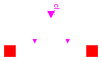
Simplified model of connection between two generators based on the swing equation. It completes Netowrk2portBase partial model, by defining the power coefficient C in terms of the parameters e_a, e_b, X_a, X_b and Xline.
The net electrical powers of two port coincides with the power P_ab.
The power losses are represented by a linear dissipative term. It is possible to directly set the damping coefficient r of the generator/shaft system. If J_a or J_b are zero, zero damping is assumed. Note that J_a and J_b are only used to compute the dissipative term and should each refer to the total inertia of the generator-shaft system; the network model does not add any inertial effects.
| Type | Name | Default | Description |
|---|---|---|---|
| Boolean | hasBreaker | false | Model includes a breaker controlled by external input |
| Reactance | Xline | Line reactance [Ohm] | |
| Frequency | fnom | 50 | Nominal frequency of the network [Hz] |
| Generator side A | |||
| Voltage | e_a | e.m.f voltage (generator A) [V] | |
| Reactance | X_a | Internal reactance (generator A) [Ohm] | |
| MomentOfInertia | J_a | 0 | Moment of inertia of the generator/shaft system A (for damping term calculation only) [kg.m2] |
| Real | r_a | 0.2 | Electrical damping of generator/shaft system (generator A) |
| Integer | Np_a | 2 | Number of electrical poles (generator A) |
| Generator side B | |||
| Voltage | e_b | e.m.f voltage (generator B) [V] | |
| Reactance | X_b | Internal reactance (generator B) [Ohm] | |
| MomentOfInertia | J_b | 0 | Moment of inertia of the generator/shaft system B (for damping term calculation only) [kg.m2] |
| Real | r_b | 0.2 | Electrical damping of generator/shaft system (generator B) |
| Integer | Np_b | 2 | Number of electrical poles (generator B) |
| Initialization | |||
| Temp | initOpt | ThermoPower.Choices.Init.Opt... | Initialization option |
| Angle | deltaStart_ab | 0 | Start value of the load angle between side A and side B [rad] |
| Type | Name | Description |
|---|---|---|
| PowerConnection | powerConnection_a | A |
| PowerConnection | powerConnection_b | B |
| input BooleanInput | closed |
model NetworkTwoGenerators_eX
"Connection: generator(a) - generator(b); Parameters: voltages and reactances"
extends ThermoPower.Electrical.Network2portBase( deltaStart=deltaStart_ab,
final C_ab = e_a*e_b/(X_a+X_b+Xline));
parameter Boolean hasBreaker = false
"Model includes a breaker controlled by external input";
parameter Modelica.SIunits.Voltage e_a "e.m.f voltage (generator A)";
parameter Modelica.SIunits.Voltage e_b "e.m.f voltage (generator B)";
parameter Modelica.SIunits.Reactance X_a "Internal reactance (generator A)";
parameter Modelica.SIunits.Reactance X_b "Internal reactance (generator B)";
parameter Modelica.SIunits.Reactance Xline "Line reactance";
parameter Modelica.SIunits.MomentOfInertia J_a=0
"Moment of inertia of the generator/shaft system A (for damping term calculation only)";
parameter Real r_a=0.2
"Electrical damping of generator/shaft system (generator A)";
parameter Integer Np_a=2 "Number of electrical poles (generator A)";
parameter Modelica.SIunits.MomentOfInertia J_b=0
"Moment of inertia of the generator/shaft system B (for damping term calculation only)";
parameter Real r_b=0.2
"Electrical damping of generator/shaft system (generator B)";
parameter Integer Np_b=2 "Number of electrical poles (generator B)";
parameter Modelica.SIunits.Frequency fnom=50
"Nominal frequency of the network";
parameter Modelica.SIunits.Angle deltaStart_ab=0
"Start value of the load angle between side A and side B";
Real D_a "Electrical damping coefficient side A";
Real D_b "Electrical damping coefficient side B";
Modelica.Blocks.Interfaces.BooleanInput closed if hasBreaker;
equation
// Breaker and its connections (unique breaker => closedInternal_gen_a = closedInternal_gen_b)
if not hasBreaker then
closedInternal_gen_a = true;
closedInternal_gen_b = true;
end if;
connect(closed, closedInternal_gen_a);
connect(closed, closedInternal_gen_b);
// Definitions of net powers
Pe_a = Pe_ab;
Pe_a = -Pe_b;
// Definitions of damping power losses
if J_a>0 then
D_a = 2*r_a*sqrt(C_ab*J_a*(2*Modelica.Constants.pi*fnom*Np_a)/(Np_a^2));
else
D_a = 0;
end if;
if J_b>0 then
D_b = 2*r_b*sqrt(C_ab*J_b*(2*Modelica.Constants.pi*fnom*Np_b)/(Np_b^2));
else
D_b = 0;
end if;
if closedInternal_gen_a then
Ploss_a = D_a*der(delta_ab);
Ploss_b = - D_b*der(delta_ab);
else
Ploss_a = 0;
Ploss_b = 0;
end if;
end NetworkTwoGenerators_eX;
Simplified model of connection between two generators based on swing equation. It completes Netowrk2portBase partial model, defining the coefficient of the exchanged clean electrical power and the damping power losses.
The power coefficient is given by directly defining the maximum power that can be transferred between the electrical port and the grid Pmax.
The net electrical powers of two port coincide with the power P_ab.
The power losses are represented by a linear dissipative term. It is possible to directly set the damping coefficient r of the generator/shaft system. If J_a or J_b are zero, zero damping is assumed. Note that J_a and J_b are only used to compute the dissipative term and should each refer to the total inertia of the generator-shaft system; the network model does not add any inertial effects.
| Type | Name | Default | Description |
|---|---|---|---|
| Boolean | hasBreaker | false | |
| Power | Pmax | Maximum power transfer [W] | |
| Frequency | fnom | 50 | Nominal frequency of the network [Hz] |
| Generator side A | |||
| MomentOfInertia | J_a | 0 | Moment of inertia of the generator/shaft system A (for damping term calculation only) [kg.m2] |
| Real | r_a | 0.2 | Electrical damping of generator/shaft system (generator A) |
| Integer | Np_a | 2 | Number of electrical poles (generator A) |
| Generator side B | |||
| MomentOfInertia | J_b | 0 | Moment of inertia of the generator/shaft system B (for damping term calculation only) [kg.m2] |
| Real | r_b | 0.2 | Electrical damping of generator/shaft system (generator B) |
| Integer | Np_b | 2 | Number of electrical poles (generator B) |
| Initialization | |||
| Temp | initOpt | ThermoPower.Choices.Init.Opt... | Initialization option |
| Angle | deltaStart_ab | 0 | Start value of the load angle between side A and side B [rad] |
| Type | Name | Description |
|---|---|---|
| PowerConnection | powerConnection_a | A |
| PowerConnection | powerConnection_b | B |
| input BooleanInput | closed |
model NetworkTwoGenerators_Pmax
"Connection: generator(a) - generator(b); Parameters: maximum power"
extends ThermoPower.Electrical.Network2portBase( deltaStart=deltaStart_ab,
final C_ab = Pmax);
parameter Boolean hasBreaker = false;
parameter Modelica.SIunits.Power Pmax "Maximum power transfer";
parameter Modelica.SIunits.MomentOfInertia J_a=0
"Moment of inertia of the generator/shaft system A (for damping term calculation only)";
parameter Real r_a=0.2
"Electrical damping of generator/shaft system (generator A)";
parameter Integer Np_a=2 "Number of electrical poles (generator A)";
parameter Modelica.SIunits.MomentOfInertia J_b=0
"Moment of inertia of the generator/shaft system B (for damping term calculation only)";
parameter Real r_b=0.2
"Electrical damping of generator/shaft system (generator B)";
parameter Integer Np_b=2 "Number of electrical poles (generator B)";
parameter Modelica.SIunits.Frequency fnom=50
"Nominal frequency of the network";
parameter Modelica.SIunits.Angle deltaStart_ab=0
"Start value of the load angle between side A and side B";
Real D_a "Electrical damping coefficient side A";
Real D_b "Electrical damping coefficient side B";
Modelica.Blocks.Interfaces.BooleanInput closed if hasBreaker;
equation
// Breaker and its connections (unique breaker => closedInternal_gen_a = closedInternal_gen_b)
if not hasBreaker then
closedInternal_gen_a = true;
closedInternal_gen_b = true;
end if;
connect(closed, closedInternal_gen_a);
connect(closed, closedInternal_gen_b);
// Definition of net powers
Pe_a = Pe_ab;
Pe_a = -Pe_b;
// Definition of damping power losses
if J_a>0 then
D_a = 2*r_a*sqrt(C_ab*J_a*(2*Modelica.Constants.pi*fnom*Np_a)/(Np_a^2));
else
D_a = 0;
end if;
if J_b>0 then
D_b = 2*r_b*sqrt(C_ab*J_b*(2*Modelica.Constants.pi*fnom*Np_b)/(Np_b^2));
else
D_b = 0;
end if;
if closedInternal_gen_a then
Ploss_a = D_a*der(delta_ab);
Ploss_b = - D_b*der(delta_ab);
else
Ploss_a = 0;
Ploss_b = 0;
end if;
end NetworkTwoGenerators_Pmax;
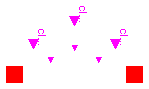
Simplified model of connection between two generators and the grid.
This model adds to Netowrk2portBase partial model, in more in comparison to the concepts expressed by the NetowrkTwoGenerators_eX model, two further electrical flows: from port_a to grid and from port_b to grid, so that to describe the interactions between two ports and the grid.
The clean electrical powers of two ports are defined by opportune combinations of the power flows introduced.
The power losses are represented by a linear dissipative term. It is possible to directly set the damping coefficient r of the generator/shaft system. If J_a or J_b are zero, zero damping is assumed. Note that J_a and J_b are only used to compute the dissipative term and should each refer to the total inertia of the generator-shaft system; the network model does not add any inertial effects.
| Type | Name | Default | Description |
|---|---|---|---|
| Boolean | hasBreaker | false | Model includes a breaker controlled by external input |
| Voltage | v | Network connection frame [V] | |
| Reactance | Xline | Line reactance [Ohm] | |
| Frequency | fnom | 50 | Frequency of the network [Hz] |
| Generator side A | |||
| Voltage | e_a | e.m.f voltage (generator A) [V] | |
| Reactance | X_a | Internal reactance (generator A) [Ohm] | |
| MomentOfInertia | J_a | 0 | Moment of inertia of the generator/shaft system A (for damping term calculation only) [kg.m2] |
| Real | r_a | 0.2 | Electrical damping of generator/shaft system (generator A) |
| Integer | Np_a | 2 | Number of electrical poles (generator A) |
| Generator side B | |||
| Voltage | e_b | e.m.f voltage (generator B) [V] | |
| Reactance | X_b | Internal reactance (generator B) [Ohm] | |
| MomentOfInertia | J_b | 0 | Moment of inertia of the generator/shaft system B (for damping term calculation only) [kg.m2] |
| Real | r_b | 0.2 | Electrical damping of generator/shaft system (generator B) |
| Integer | Np_b | 2 | Number of electrical poles (generator B) |
| Initialization | |||
| Temp | initOpt | ThermoPower.Choices.Init.Opt... | Initialization option |
| Type | Name | Description |
|---|---|---|
| PowerConnection | powerConnection_a | A |
| PowerConnection | powerConnection_b | B |
| input BooleanInput | closed_gen_a | |
| input BooleanInput | closed_gen_b | |
| input BooleanInput | closed_grid |
model NetworkGridTwoGenerators "Base class for network with two port"
extends ThermoPower.Electrical.Network2portBase( final C_ab = e_a*e_b/(X_a+X_b));
parameter Boolean hasBreaker = false
"Model includes a breaker controlled by external input";
parameter Modelica.SIunits.Voltage v "Network connection frame";
parameter Modelica.SIunits.Voltage e_a "e.m.f voltage (generator A)";
parameter Modelica.SIunits.Voltage e_b "e.m.f voltage (generator B)";
parameter Modelica.SIunits.Reactance X_a "Internal reactance (generator A)";
parameter Modelica.SIunits.Reactance X_b "Internal reactance (generator B)";
parameter Modelica.SIunits.Reactance Xline "Line reactance";
parameter Modelica.SIunits.MomentOfInertia J_a=0
"Moment of inertia of the generator/shaft system A (for damping term calculation only)";
parameter Real r_a=0.2
"Electrical damping of generator/shaft system (generator A)";
parameter Integer Np_a=2 "Number of electrical poles (generator A)";
parameter Modelica.SIunits.MomentOfInertia J_b=0
"Moment of inertia of the generator/shaft system B (for damping term calculation only)";
parameter Real r_b=0.2
"Electrical damping of generator/shaft system (generator B)";
parameter Integer Np_b=2 "Number of electrical poles (generator B)";
parameter Modelica.SIunits.Frequency fnom=50 "Frequency of the network";
Real D_a "Electrical damping coefficient side A";
Real D_b "Electrical damping coefficient side B";
Modelica.SIunits.Power Pe_g "Electrical Power provided to the grid";
Modelica.SIunits.Power Pe_ag "Power transferred from generator A to the grid";
Modelica.SIunits.Power Pe_bg "Power transferred from generator B to the grid";
final parameter Modelica.SIunits.Power C_ag = e_a*v/(X_a+Xline)
"Coefficient of Pe_ag";
final parameter Modelica.SIunits.Power C_bg = e_b*v/(X_b+Xline)
"Coefficient of Pe_bg";
Modelica.SIunits.AngularVelocity omegaRef "Angular velocity reference";
Modelica.SIunits.Angle delta_ag( stateSelect = StateSelect.prefer)
"Load angle between generator side A and the grid";
Modelica.SIunits.Angle delta_bg
"Load angle between generator side B and the grid";
Modelica.SIunits.Angle delta_g "Grid phase";
Modelica.Blocks.Interfaces.BooleanInput closed_gen_a if
hasBreaker;
Modelica.Blocks.Interfaces.BooleanInput closed_gen_b if
hasBreaker;
Modelica.Blocks.Interfaces.BooleanInput closed_grid if
hasBreaker;
protected
Modelica.Blocks.Interfaces.BooleanInput closedInternal_grid;
equation
// Load angles
omegaRef = 2*Modelica.Constants.pi*fnom;
der(delta_g) = omegaRef;
delta_ag = delta_a - delta_g;
delta_bg = delta_b - delta_g;
// Breakers and their connections
if not hasBreaker then
closedInternal_gen_a = true;
closedInternal_gen_b = true;
closedInternal_grid = true;
end if;
connect(closed_gen_a, closedInternal_gen_a);
connect(closed_gen_b, closedInternal_gen_b);
connect(closed_grid, closedInternal_grid);
// Coefficients of exchanged powers (power = zero if open breaker)
if closedInternal_gen_a and closedInternal_grid then
Pe_ag = C_ag*Modelica.Math.sin(delta_ag);
else
Pe_ag = 0;
end if;
if closedInternal_gen_b and closedInternal_grid then
Pe_bg = C_bg*Modelica.Math.sin(delta_bg);
else
Pe_bg = 0;
end if;
if closedInternal_gen_a then
Ploss_a = D_a*der(delta_ag);
else
Ploss_a = 0;
end if;
if closedInternal_gen_b then
Ploss_b = D_b*der(delta_bg);
else
Ploss_b = 0;
end if;
// Net and exchanged powers
Pe_a = Pe_ab + Pe_ag;
Pe_b = -Pe_ab + Pe_bg;
Pe_g = Pe_ag + Pe_bg;
// Damping power losses
if J_a>0 then
D_a = 2*r_a*sqrt(C_ab*J_a*(2*Modelica.Constants.pi*fnom*Np_a)/(Np_a^2));
else
D_a = 0;
end if;
if J_b>0 then
D_b = 2*r_b*sqrt(C_ab*J_b*(2*Modelica.Constants.pi*fnom*Np_b)/(Np_b^2));
else
D_b = 0;
end if;
initial equation
if initOpt == Choices.Init.Options.noInit then
// do nothing
elseif initOpt == Choices.Init.Options.steadyState then
der(delta_ag) = 0;
else
assert(false, "Unsupported initialisation option");
end if;
end NetworkGridTwoGenerators;